Model Checking Configuration
The configuration of a model checking run is specified using
a record structure (@mce_opts@).
The best way of making the definition of @mce_opts@
available to the Erlang shell is through
the following command:
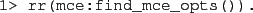
The relevant fields of are enumerated below:
-
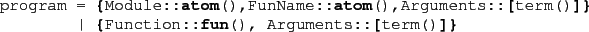
Specifies the initial function of the program.
-
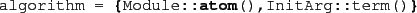
Specifies the type of algorithm used for
traversing the program state space
(see Section 3.2.2 below for details on algorithms).
The default algorithm is @mce_alg_safety@.
-
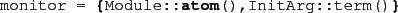
Specifies the correctness monitor used to check
the behaviour of the program.
Monitors are either safety monitors which should
be checked in every program state,
or büchi monitors which encode linear temporal logic properties (LTL).
The Ltl2Buchi tool can be used to translate
LTL properties into büchi monitors (see Section 4 for details).
Further details on monitors are given in Section 3.3.
The default monitor never reports an error.
-
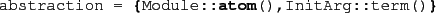
Abstraction implementation (see Section 3.4 for details).
The default abstraction preserves all properties of the states
and actions to which it is applied.
-
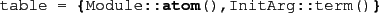
State table implementation (see Section 3.5 for details).
The default table hashes on the stored states, but
does not store transitions.
-
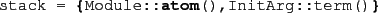
Stack implementation (see Section 3.6 for details).
The default stack implementation is @mce_stack_list@.
-
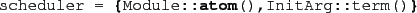
A scheduler determines which transitions are taken (in simulation
mode, see Section 3.7 for details).
The default scheduler (@mce_sched_rnd@)
selects randomly a new transition.
There are also a number of fields, which when specified,
can change the behaviour of state space exploration algorithms
and the McErlang runtime system.
-
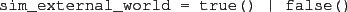
If this flag is set the model checker will
interface with the external world in simulation mode (i.e.,
will receive messages sent from other processes outside the simulation).
-
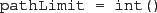
Limit execution paths to a maximum depth (not set by default).
-
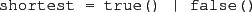
If the flag is set tries to compute the shortest path to failure
(default false).
-
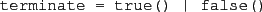
If set, the runtime system will randomly terminate processes
(default false).
-
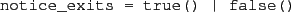
Warn when a process terminates abnormally due to an uncaught exception
(default true).
-
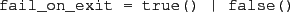
Stop a model checking run if a process
terminates abnormally due to an uncaught exception
(default true).
-
![\begin{lstlisting}[language=Erlang]
is_infinitely_fast = true() \vert false()
\end{lstlisting}](img47.png)
Prohibits (non-zero) timeouts (caused by @after@ clauses in
@receive@ statements) from occurring if
non-timeout transitions are enabled.
This corresponds to the assumption that the system
is infinitely fast (default false).
-
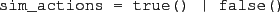
Print actions that occur during a simulation run (using the debugger or
the algorithm @mce_alg_simulation@)
(default false).
-
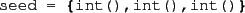
Specify the initial seed (used by the randomised scheduler).
-
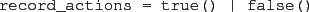
Record seen actions during a model checking run
(default true).
-
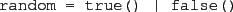
Randomize the order of transitions. This option
is typically used when
using a safety or liveness model checking algorithm, as the specified scheduler
(using scheduler=) is not used for such algorithms
(default false).
-
Stops model checking after the time limit on
the running time of the verification, specified in seconds,
has been reached (default unlimited), with an inconclusive result.
-
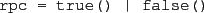
Support for the rpc module re-implementation in McErlang
(default false).
-
![\begin{lstlisting}[language=Erlang]
small_pids = true() \vert false()
\end{lstlisting}](img54.png)
Controls whether McErlang tries to aggressively reuse process identifiers
as soon as possible. Such reuse is costly in terms of execution speed,
but generally necessary to obtain finite models during model checking.
Default true for model checking algorithms, and
false for simulation algorithms.
2010-07-05